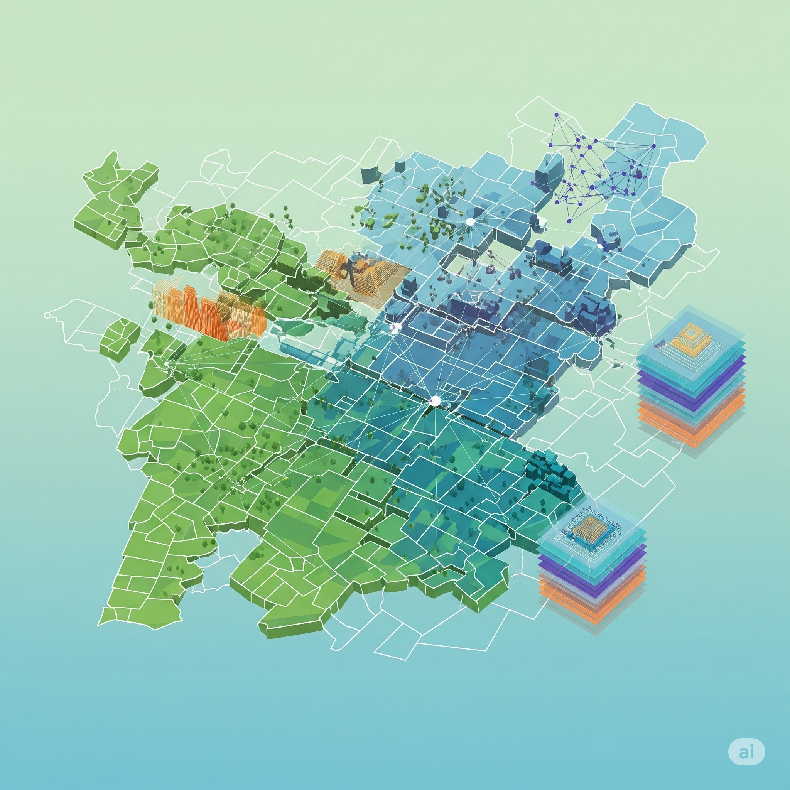
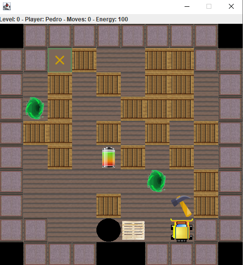
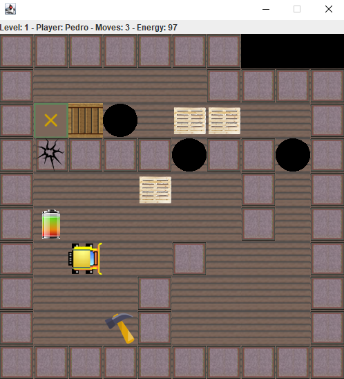
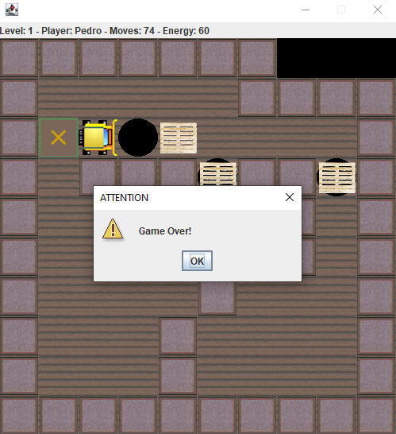
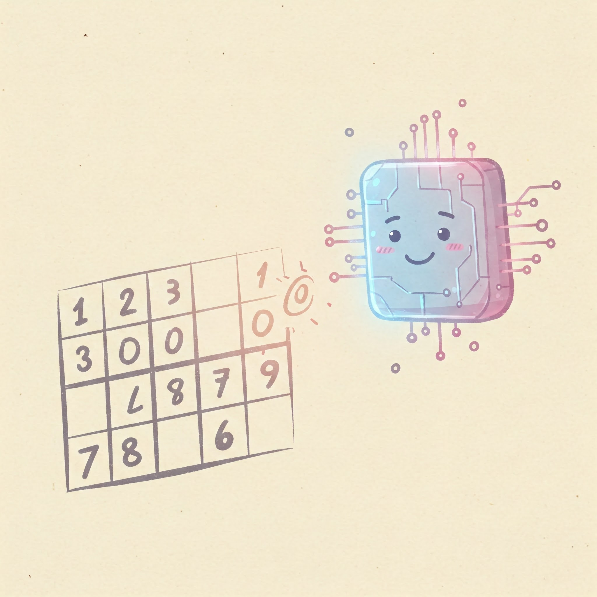

I only have university projects to show, I hope that my first professional project is with you :)
Sticker Album
This project is a digital version of a classic sticker album inspired on EURO 2024.
Sticker Album Details
This project is an implementation of a website related to Euro 2024, which includes a virtual sticker collection. Additionally, the site features a store where users can buy sticker packs and a forum for exchanging ideas. The development of the site focused on inheritance between HTML pages, with the homepage as the main page and other pages like the store, forum, sticker album, and information derived from it. The website was built using the Django framework, and React was utilized for superuser functionalities.
Key features:
Inheritance between HTML pages: The homepage serves as the parent page, with a common header and footer for the derived pages.
Login functionalities: Differentiation between regular users and superusers, with specific permissions for each type.
Interactivity on the homepage: Interactive banners that display game information when clicked.
Personal page: Allows users to change their profile picture, check and load balance, and view personal information.
Store: Provides sticker packs for purchase, with random generation of stickers.
Forum: Enables interaction between users through text messages, with posting and liking functionalities.
Sticker album: Exclusive to regular users, where they can view the stickers they have acquired.

GeoOrganizer
Developed a Java-based app using Agile, Git, and testing best practices in a collaborative team environment.
As part of the Software Engineering course at ISCTE, I participated in a team project designed primarily to foster practical experience in agile methodologies, software testing, and the application of best practices in software engineering. The project emphasized collaborative development in a team setting, focusing on the full software development lifecycle—from requirements analysis and version control to testing, documentation, and delivery—mirroring real-world engineering workflows.
Project Overview
Load and process cadastral data of rural properties (CSV format).
Represent properties and owners as graphs, modeling adjacency and ownership relationships.
Calculate average property areas by administrative region.
Suggest property exchanges between owners to maximize contiguous land ownership and overall land usability.
Technologies and Tools
Backend: Developed in Java, leveraging object-oriented principles and modular design.
Frontend: Built using Java Swing, providing a desktop GUI for data visualization and user interaction.
Testing: Implemented with JUnit, achieving over 50% test coverage, including cyclomatic complexity metrics.
Documentation: Generated using JavaDoc.
Dependency Management: Handled via Maven.
Project Management
Version Control: Managed collaboratively using Git and GitHub, with structured branching, pull requests, and tagging.
Agile Methodology: Followed the Scrum framework, with:
Sprint planning, reviews, and retrospectives tracked on Trello.
Integration of Trello with GitHub for traceability between user stories and code commits.
Burndown charts and task assignments to monitor progress and team contributions.
Deliverables
Fully functional Java application with a Swing-based GUI.
GitHub repository with complete source code, documentation, test reports, and project video.
Evidence of agile practices and collaborative development.
This project not only strengthened my technical skills in Java and software architecture but also enhanced my experience in agile teamwork, version control, and delivering real-world software solutions with a social impact.
Sokoban
This is a Sokoban project and was my first approach to object-oriented programming.
Sokoban Details
This project is a Java implementation of Sokoban, a classic puzzle game where the player pushes boxes around in a warehouse, trying to get them to designated storage locations. The game logic includes handling player movements, collision detection, items and level progression.
The project was developed with a focus on object-oriented principles, ensuring that the code is modular and easy to maintain.
Key features:
Multiple levels with increasing difficulty
Keyboard controls for player movement
Collision detection to prevent invalid moves
Level reset and undo functionality
Sokoban Gallery



ISCTorrent
This is the ISC Torrent project, an app to download music through torrents.
ISCTorrent Details
This project is a Java implementation of IscTorrent, a distributed file-sharing system designed to download binary files (specifically sound files). The system operates in a peer-to-peer (P2P) network where multiple users can request files from each other or respond to requests by sending file blocks. The focus of the project is on concurrent and distributed programming, with the graphical interface of the user applications considered secondary.
Key features:
P2P Architecture: Nodes in the network exchange messages to search for or request file downloads without relying on a central server.
Node Connections: Each node can directly communicate with known nodes, establishing connections actively or passively.
File Search Protocol: Users can search for files by keywords, receiving a list of available files and the nodes that host them.
File Download: Files are downloaded in blocks from multiple nodes simultaneously, managed by a threadpool approach.
Thread Management: Each user corresponds to a thread, and download tasks are managed by a dedicated thread pool to handle multiple requests efficiently.
Network Communication: Messages are exchanged over object channels for file search and download.
Hash Function: Each file has a SHA-256 hash value for identification.

Sudoku Solver
This is the Sudoku Solver, a Prolog project for the purpose of AI learning.
Sudoku Solver Details
This project is a Prolog implementation of a Sudoku Solver, designed to solve Sudoku puzzles by filling in a 9x9 grid such that each row, column, and 3x3 subgrid contains the digits from 1 to 9 without repetition. The project focuses on artificial intelligence principles and aims to develop a solver that can handle partially filled Sudoku matrices, replacing empty spaces correctly according to the rules of the game. This project does not include a frontend and consists solely of solving Sudoku puzzles.
Key features:
Multiple Solutions: If a Sudoku puzzle has multiple solutions, the solver generates all possible solutions.
Flexible Grid Sizes: The code can solve Sudoku puzzles of other sizes, as long as the number of rows and columns is a perfect square (e.g., 4x4, 9x9, 16x16, 25x25).